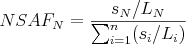

crux spectral-counts
Usage:
crux spectral-counts [options] <input
PSM> <protein database>
Description:
Given a collection of scored PSMs, produce a list of proteins or peptides ranked by their a quantification score. Spectral-counts supports two types of quantification: Normalized Spectral Abundance Factor (NSAF) and Normalized Spectral Index (SIN). The NSAF method is from a publication by Paoletti et al. (2006). The SIN method is from the Griffin et al. (2010) paper. The two quantification methods are listed below:
Protein Quantification
For each protein in a given database, the NSAF score is:
where:
- N is protein index
- SN is the number Spectra matched to protein index
- LN is the length of protein N
- n is the total number of proteins in the input database
For each protein in a given database, the SIN score is:
where:
- N is protein index
- pn is number of unique peptides in protein N
- sj number of spectra assigned to peptide j
- ik is the total fragment ion intensity of spectrum k
- LN is length of protein N
Peptide Quantification
For each peptide in a given database, the NSAF score is:

where:
- N is peptide index
- SN is the number Spectra matched to peptide N
- LN is the length of peptide N
- n is the total number of peptides in the input database
For each peptide in a given database, the SIN score is:
where:
- N is peptide index
- sN is number of spectra assigned to peptide N
- ik is the total fragment ion intensity of spectra
- LN is length of peptide N


Input:
-
<input PSM>–A tab delimited text file produced by acruxpost-search command, for example percolator.target.txt or qranker.target.txt. <protein database>– The name of the file in fasta format or the directory containing the protein index from which to retrieve proteins and peptides.
- spectral-count.target.txt: a tab-delimited text file containing the protein IDs and their corresponding scores, in sorted order.
- spectral-count.log.txt: All messages written to STDERR.
The program writes one file to the folder crux-output
by default.
The name of the output folder can be set by the user using the
--output-dir option. The following files will be created:
-
--measure <NSAF|SIN>– Type of analysis to make on match results: (NSAF | SIN). Default SIN. -
--quant-level <protein|peptide>– Quantification at protein or peptide level. Methods described under Description. Default=protein. -
--parsimony <none|simple|greedy>– Perform a parsimony analysis on the proteins, and report a "parsimony rank" column in the output file. This column contains integers indicating the protein's rank in a list sorted by spectral counts. However, if the parsimony analysis results in two proteins being merged, then their parsimony rank is the same. In such a case, the rank is assigned based on the largest spectral count of any protein in the merged meta-protein. The "simple" parsimony algorithm only merges two proteins A and B if the peptides identified in protein A are the same as or a subset of the peptides identified in protein B. The "greedy" parsimony algorithm does additional merging, using the peptide q-values to greedily assign each peptide to a single protein. -
--threshold <double>– Only consider PSMs with a q-value lower than this threshold. The q-value may be in the file's 'percolator q-value' column, 'q-ranker q-value' column or 'decoy q-value (xcorr)' column. Default = 0.01. -
--fileroot <string>– Thefilerootstring will be added as a prefix to all output file names. Default = none. -
--input-MS2 <string>– MS2 file corresponding to the psm file. Required to measure the SIN. Ignored for NSAF. -
--output-dir <filename>– The name of the directory where output files will be created. Default = crux-output. -
--unique-mapping <unique-mapping>– Ignore peptides with multiple mappings to proteins (T,F). Default (F) -
--overwrite T|F– Replace existing files if true (T) or fail when trying to overwrite a file if false (F). Default = F. -
--parameter-file <filename>– A file containing command-line or additional parameters. See the parameter documentation page for details.